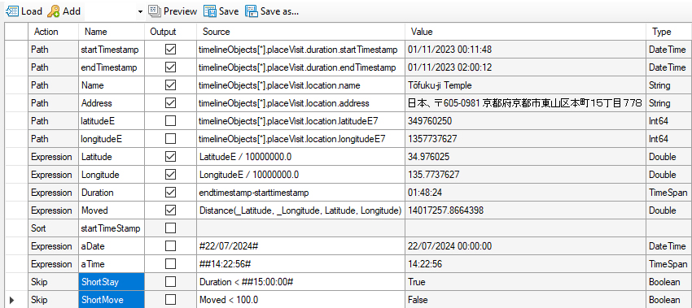
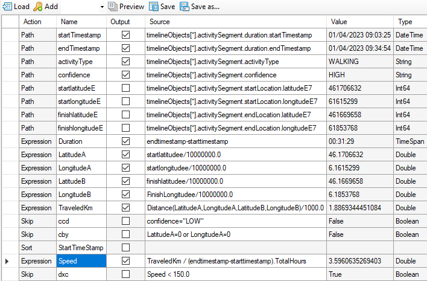
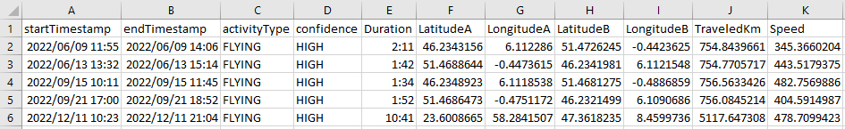
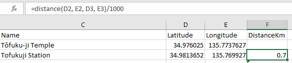
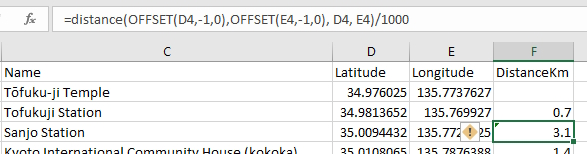

Reducing the number of places to display
GPS tracks frequently have a large number of places. When displayed as-is this can produce a cluttered map. Several techniques can be applied to deal with this.
Filtering at import
Templates can have Skip conditions to select only relevant data. For example, skipping visits when moving less than 100 metres or visits less than 15 minutes:
Notice the syntax for date and timespan constants. Also, the use of 'previous' variables _Latitude and _Longitude in the Distance formula.
Similarly, Skip on speed < 150Km/h:
extracts only flights:
Filtering with Excel
Geodesix only imports rows that are visible; hiding unwanted rows prevents them from being drawn on on the map. Adding columns for speed, duration, etc. allow filtering on the same base data.
Reduce icon size
When mapping output from fitness apps, it is the paths that are of interest and not the icons themselves. This can be acheived with Tools⇒Drawing and setting the iconSize to a small value.
Sorting places with references to preceding rows
When referring to the preceding row, to calculate a distance or time, removing rows or sorting the data will make invalid references:
This can be fixed by using Excel's Offset function:
